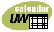

|
|
Computing & Communications
uwchelp@cac.washington.edu |
|  | About UW Calendar |
| UW Public Events Help |
|
Public Event Views |
Filtering Public Events For UW Campus Community |
The Public Events Calendar allows you to view Today, a Day, a Week, a Month, or a Year. The current view is highlighted in green in the navigation bar on the top right hand corner of the page. On every view except the Year View, you can filter the public events, choosing which of the events you'd like to see. On every view except the Year View, you will see all the matching events that occur sometime during that day, week, or month. If you move from one view to a different day, week, month or year, the filter used on the old view will be used as the filter on the new view.
Events for a specific day are displayed in the Day view. The date is displayed in the header on the top of the page flanked by arrows. Clicking on the arrow to the left of the date decrements the date one day. Clicking on the arrow to the right of the date increments the date one day.
The Day view displays events in a list along the left side of the page under the Public Events header. The events are displayed in a column according to their start times. Events that started on a day prior to the active day appear at the top of the listing. The color coding for events follow:
If you have a UWNet ID, you can add the campus event to your calendar by clicking on the icon preceding the title of the event. If you have not already logged in with weblogin, you will be asked to enter your UWNetID and password before the event is added to your calendar.
When More is clicked, the Display Event page appears containing the following information:
The Today view displays the Day view for the current date. This view allows you to quickly get back to today's date after browsing past or future dates in the events calendar.
The Week view displays events in a list down the left side of the page beginning with Sunday of the week specified. You can navigate to individual days by clicking on the specific day link in the list.
The week you are viewing is displayed in the header on the top of the page flanked by arrows. Clicking on the arrow to the left of the date decrements the view one week. Clicking on the arrow to the right of the date increments the view one week.
The Month view displays events in a list down the left side of the page beginning with the first day of the month specified. You can navigate to individual days by clicking on the specific day link in the list.
The month you are viewing is displayed in the header on the top of the page flanked by arrows. Clicking on the arrow to the left of the date decrements the view one month. Clicking on the arrow to the right of the date increments the view one month.
The UW Public Events Year View displays twelve months in grid format. The current month is highlighted. Calendar events are not displayed in the year view. You can navigate to individuals days, months and weeks by clicking on the appropriate links in the grid. The year you are viewing is displayed in the header on the top of the page flanked by arrows. Clicking on the arrow to the left of the year decrements the view one year. Clicking on the arrow to the right of the year increments the view one year.
To filter Campus Events by text, enter a word or phrase in the input box and click Go (or press the Enter key). Only events containing the exact text entered, in any field (title, location, sponsor, keywords, etc.), will be displayed. The filter is not case sensitive. For example, searches for "special events", "Special Events", and "SPECIAL EVENTS" will all return the same results.
The text used to filter the results can be verified by the yellow status bar above the event listings.
Events may be viewed for one of the main campus calendars, including Arts, Conferences/Meetings, Health Sciences, Lectures/Seminars, Radio/TV, Sports, and other events. Events must be sponsored by a UW unit or organization in order to be included in the calendar. Some of the main campus calendars are comprised of a set of secondary calendars. For a description of the main main calendars and their secondary calendars, see the Complete List of Calendars. To view events for one of the main calendars, click on the calendar name.
The name of the calendar you are viewing is displayed in the yellow status bar above the event listings.
Click on the complete list of calendars link to see the main campus calendars and the secondary calendars that comprise them. A new page will display with the following calendars:
The name of the calendar you are viewing is displayed in the yellow status bar above the event listings.
To display all events for the date range highlighted in the navigation bar, click All Events.
The yellow status bar above the event listing will display "No filter (showing all events)".
UW Calendar coordinators in campus units can enter events directly online using a simple form. For access to the form, contact Bob Roseth, roseth@u.washington.edu.
Individuals without online access can submit calendar items to : uweek@u.washington.edu. Include title, day(s), date(s), time(s), location, description, cost (if any) sponsoring organization, contact phone and/or email, and type of event (lecture, concert, training, seminar, sports, etc.).
Information about UW events is supplied by the sponsoring unit. The Office of News and Information attempts to be as complete and accurate as possible in listing events at the University of Washington. If you have found errors in the calendar, please send email to: newsweb@u.washington.edu.
|